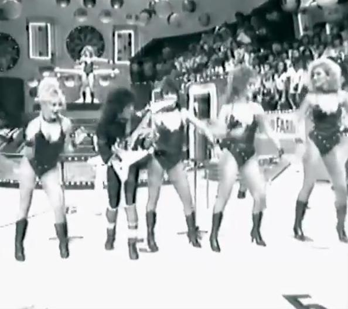

Robertinho de Recife
Carlos Roberto Cavalcanti de Albuquerque, mais conhecido artísticamente como Robertinho de Recife, se tornou um dos maiores guitarristas do país e do mundo; além de compositor, produtor musical e arranjador musical brasileiro. Sua trajetória no universo da música popular consagra-o como profissional de múltiplos talentos e iniciativas.
Robertinho completou 70 anos em 2023 com uma carreira longeva que perdura há mais de 50 anos. No período em que foi músico de estúdio, tocava estilos radicalmente diversos ao acompanhar artistas como Jane Duboc, Cauby Peixoto, The Fevers e Hermeto Pascoal. Outras modalidades que também tocou incluem o heavy metal e a música infantil. Na ocasião do lançamento de seu disco "Rapsódia Rock", em 1990, apresentava-se vestido de Mozart.
Robertinho vestido de Mozart (Rapsódia Rock)
Como guitarrista, Robertinho de Recife já participou em shows ou gravou com vários artistas internacionais, tais como: George Martin (produtor musical dos Beatles), BB King, Watchpocket, Nina Hagen, Stanley Clarke, Peter Tosh, Andy Summers (The Police), Deep Purple (quando este esteve no Brasil), Stewart Copeland (The Police), Quiet Riot (quando este esteve no Brasil), Steve Cropper, Miami Sound Machine, Phil Collen (Def Leppard), John Lee Hooker, Simon Kirke (Free), Bonnie Ratt, Arto Lindsay, Taj Mahal, Gilles Martin, Dr. John and the Night Tripper e Candy Shoes String.
Dentre os artistas nacionais com quem gravou destacam-se: Yahoo (no qual foi integrante-fundador), Rádio Táxi, Xuxa, Geraldo Azevedo, Zé Ramalho, Raimundo Fagner, Hermeto Pascoal, Sivuca, Elba Ramalho, Amelinha, Lenine, Luis Melodia, Dominguinhos, Zeca Baleiro, Luiz Caldas, Frank Solari, Moraes Moreira, Orlando Morais, Lulu Santos, Martinho da Vila, Marisa Monte, Gal Costa, Tânia Alves, Pepeu Gomes, Wagner Tiso, José Augusto, Agnaldo Timóteo, Elymar Santos, Rosanna, Nara Leão, entre outros.
Destaques da carreira musical
No final dos anos 1960, acompanhou alguns ídolos da Jovem Guarda, como Rosemary e Jerry Adriani.
A estreia em disco solo, "Jardim da infância", de 1977, acontece numa fase de afirmação dos artistas através do trabalho de cada um, de formação de público. E vários elementos do LP evidenciam isso: na capa deslumbrante de Fausto Nilo, também parceiro em várias letras do disco; nos vocais de Elba Ramalho, Amelinha e Fagner, que assina a coprodução; na sanfona de Sivuca, no trompete de Márcio Montarroyos; no baixo de Itiberê. Jazz e rock, música nordestina, indiana, flamenca.
Disco de estreia em carreira solo do Robertinho com "Jardim da Infância" (1977)
Em 1978, Robertinho voltou sua atenção para o frevo e lançou o álbum "Robertinho no Passo" ao lado de Hermeto Pascoal. Outra influência forte no som daquele disco, segundo Robertinho, é a tradição indígena. O disco, na época, foi uma das apostas da gravadora para o carnaval.
Robertinho no Passo (1978)
Realizou a turnê Tropical, como músico de Gal Costa, de onde veio inspiração para seu terceiro álbum, "Loucos Swings Tropicais". Ritmos latinos em destaque, participação de Gal em "Merengue" e o duelo entre guitarra e vocoder, em "Papo de guitarrista".
Robertinho & Gal
No LP "Ah, Robertinho do Mundo" (1983), assina “Baby Doll de Nylon” com Caetano Veloso.
Em 1984, grava a música "É de chocolate" junto com o Trem da Alegria, que vira um grande sucesso, e por isso ganhou disco de platina.
Em 1985, Robertinho, juntamente com sua banda, o Metal Mania, abriu shows da banda norte-americana Quiet Riot em São Paulo, Rio de Janeiro e Porto Alegre.
Banda de heavy metal do Robertinho de Recife nos anos 80: Metal Mania
Em 1988, Robertinho fundou o grupo musical Yahoo, porém deixou a banda um ano e meio após sua fundação, em 1989. A banda ficou bastante conhecida por fazer versões de grandes sucessos internacionais com letras em português.
Robertinho de Recife teve o auge de sua carreira nos anos 70 e 80 e depois se dedicou a produzir artisticamente, nomes como Xuxa, Geraldo Azevedo, Zé Ramalho e Raimundo Fagner.

Robertinho de Recife no programa do Chacrinha (Tv Globo)
A partir de 1990, se afasta dos palcos. Por muito tempo, trabalhou como produtor musical em seu estúdio, o Special Discos, no Rio de Janeiro. Um dos trabalhos mais relevantes foi o álbum "Flor da Paraíba", da cantora Elba Ramalho, lançado em 1998.
Depois de 25 anos, volta aos palcos em 2014, com a reedição do show "Rapsódia Rock". Também neste ano, reúne novamente o Metal Mania, para lançar o álbum "Metal Mania – Back for More".
Ao longo da carreira dividiu o palco com várias atrações internacionais como: Quiet Riot, Deep Purple, Judas Priest, Accept, e também fez uma participação especial na apresentação da banda Manowar, no Monster´s of Rock 2015, em São Paulo.
Em 2019, lança com Zé Ramalho hits metaleiros com versões em português: "Sr. Ozzy" (versão de "Mr. Crowley" de Ozzy Osbourne) e "Ás de Espadas" (versão de "Ace of Spades" da banda Motörhead). Também planejava lançar disco de baladas com o cantor Andre Matos, que veio a falecer neste ano.
Em 2020, vira tema de uma série documental chamada "Robertinho de Recife? Robertinho do Mundo!", dirigido por Claudia Andre e transmitido no canal por assinatura Music Box Brazil.
Documentário sobre a carreira do guitarrista e produtor Robertinho de Recife
Galeria de Imagens